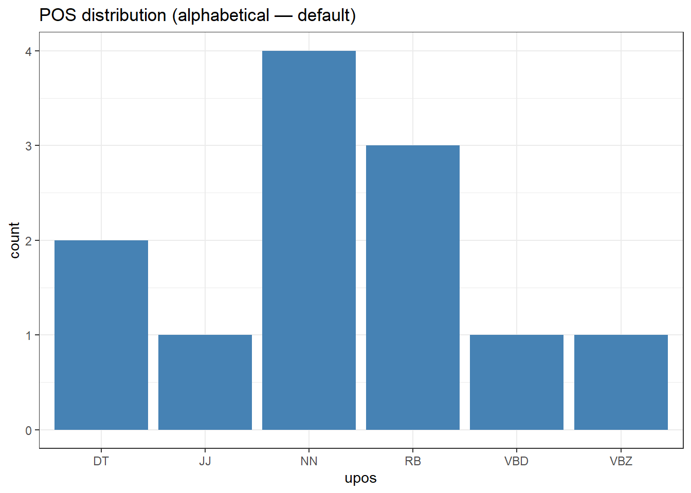
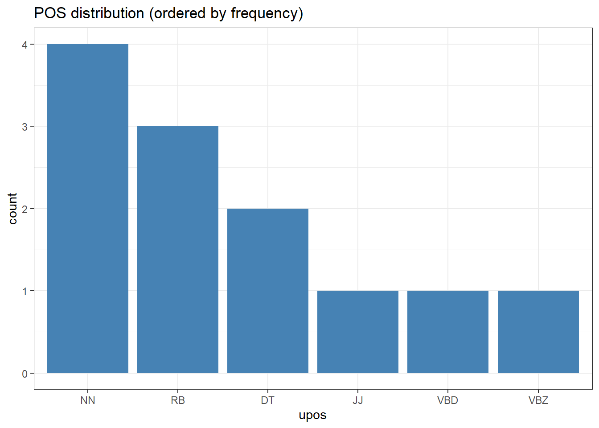
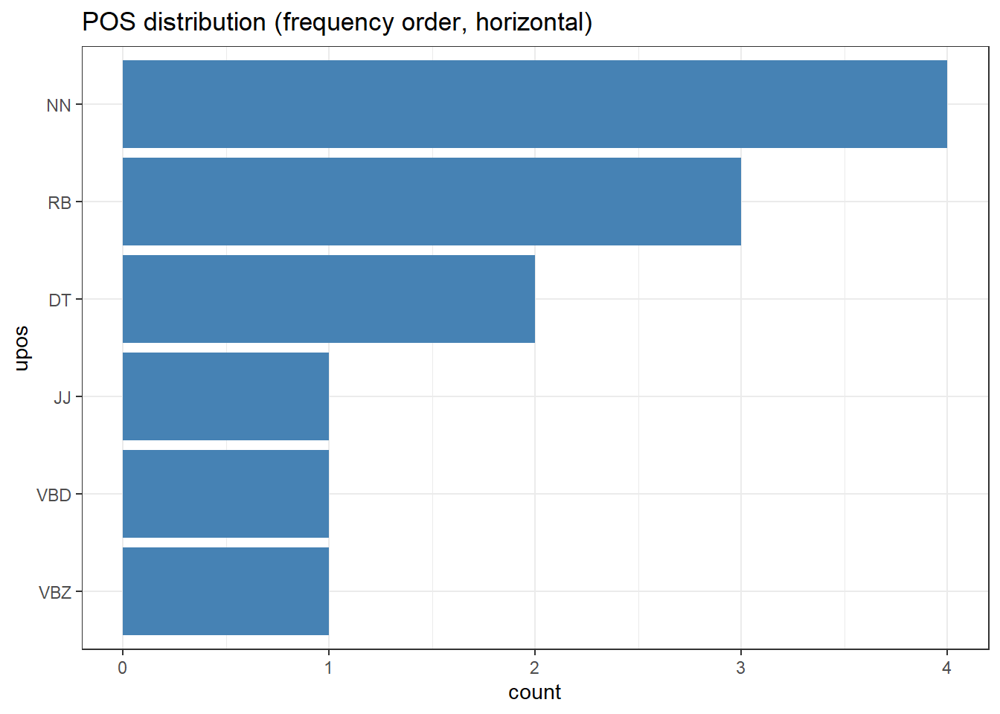
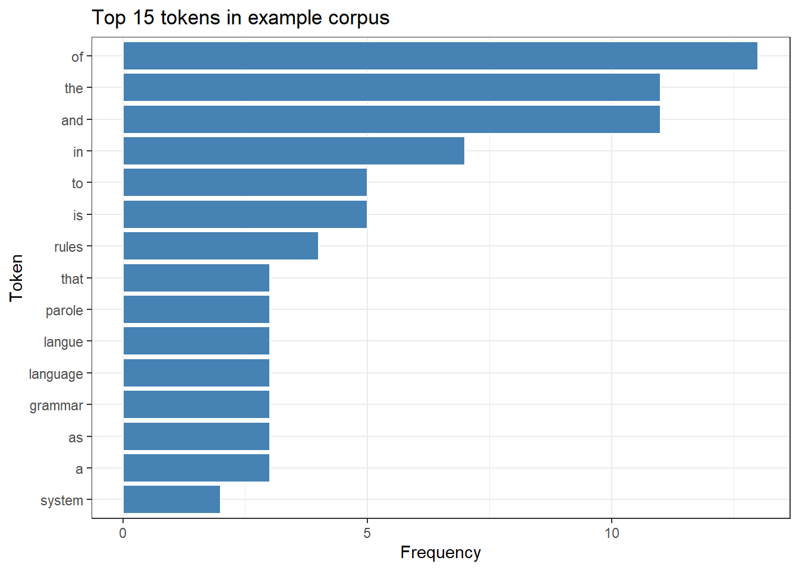

This tutorial introduces string processing in R — the art of manipulating, searching, extracting, and transforming character data. String processing is a foundational skill for linguistic research: nearly every corpus study, text-mining project, or annotation pipeline begins with reading raw text and ends with cleaned, structured character data ready for analysis.
The tutorial is aimed at beginners and intermediate R users. It covers a progression from basic string operations in base R and the stringr package, through regular expressions, through text-cleaning pipelines, to tokenisation with quanteda. Each section introduces functions with linguistic examples and includes worked exercises.
Prerequisite Tutorials
Before working through this tutorial, you should be familiar with:
Tokenise text using quanteda and understand the difference between word, sentence, and character tokenisation
Citation
Martin Schweinberger. 2026. String Processing in R. The Language Technology and Data Analysis Laboratory (LADAL), The University of Queensland, Australia. url: https://ladal.edu.au/tutorials/string/string.html (Version 2026.03.28), doi: .
Setup
Installing Packages
Code
# Run once — comment out after installationinstall.packages("tidyverse") # stringr, dplyr, tidyr, purrr, ggplot2, forcatsinstall.packages("here") # reproducible file pathsinstall.packages("flextable") # formatted tablesinstall.packages("quanteda") # tokenisation and corpus toolsinstall.packages("tm") # text-mining utilities (stopwords, stemming)install.packages("checkdown") # interactive quiz questionsinstall.packages("remotes")remotes::install_github("rlesur/klippy")
Throughout this tutorial we work with four example texts loaded from the LADAL data repository.
Code
# Text 1: paragraph about grammar (single string)exampletext <- base::readRDS("tutorials/string/data/tx1.rda", "rb")# Text 2: same paragraph split into sentences (character vector)splitexampletext <- base::readRDS("tutorials/string/data/tx2.rda", "rb")# Text 3: paragraph about Ferdinand de Saussure (single string)additionaltext <- base::readRDS("tutorials/string/data/tx3.rda", "rb")# Text 4: three short sentences (character vector)sentences <- base::readRDS("tutorials/string/data/tx4.rda", "rb")# Inspectcat("exampletext (first 120 chars):\n", substr(exampletext, 1, 120), "\n\n")
exampletext (first 120 chars):
Grammar is a system of rules which governs the production and use of utterances in a given language. These rules apply t
[1] "Grammar is a system of rules which governs the production and use of utterances in a given language."
[2] "These rules apply to sound as well as meaning, and include componential subsets of rules, such as those pertaining to phonology (the organisation of phonetic sound systems), morphology (the formation and composition of words), and syntax (the formation and composition of phrases and sentences)."
[3] "Many modern theories that deal with the principles of grammar are based on Noam Chomsky's framework of generative linguistics."
Code
cat("sentences:\n"); print(sentences)
sentences:
[1] "This is a first sentence." "This is a second sentence."
[3] "And this is a third sentence."
Character Vectors in R
A character vector is R’s basic data structure for text. Each element is a separate string — exampletext is length 1 (one long string), while splitexampletext is length n (one element per sentence). Most stringr functions are vectorised: they accept vectors of any length and return a result of the same length, making it easy to process many strings at once.
Base R String Functions
Section Overview
What you will learn: The most important string functions available in base R — no packages required. These underpin everything else and appear throughout code you will encounter in the wild.
Case Conversion
Code
tolower(exampletext) |>substr(1, 80)
[1] "grammar is a system of rules which governs the production and use of utterances "
Code
toupper(exampletext) |>substr(1, 80)
[1] "GRAMMAR IS A SYSTEM OF RULES WHICH GOVERNS THE PRODUCTION AND USE OF UTTERANCES "
String Length
Code
# Number of characters per elementnchar(splitexampletext)
Both replace all occurrences of a pattern. The key practical difference is argument order: gsub(pattern, replacement, string) puts the string last (inconvenient for pipes), while str_replace_all(string, pattern, replacement) puts the string first (pipe-friendly). For new code, prefer stringr. For reading legacy code, recognise gsub.
Splitting Strings
Code
# strsplit returns a LIST — one element per input stringwords_list <-strsplit(exampletext, "\\s+")head(words_list[[1]], 10)
# Flatten to a plain vectorwords_vec <-strsplit(exampletext, "\\s+")[[1]]length(words_vec)
[1] 81
✎ Check Your Understanding — Question 1
You have a character vector texts with 50 sentences. You want the indices of sentences that contain the word “the” (case-insensitive). Which call is correct?
grep("the", texts, ignore.case = TRUE) — returns matching indices
gsub("the", "", texts) — removes “the” from each sentence
grepl("the", texts, ignore.case = TRUE) — returns a logical vector, not indices
sub("the", "THE", texts) — replaces the first match only
Answer
a) grep("the", texts, ignore.case = TRUE)
grep() returns the positions (indices) of matching elements. grepl() (option c) is also useful but returns TRUE/FALSE — use it when filtering with texts[grepl(...)]. Options b and d perform replacements.
Core stringr Functions
Section Overview
What you will learn: The complete set of stringr functions for detecting, extracting, replacing, splitting, padding, ordering, and combining strings — all following the consistent str_verb(string, pattern) convention that makes them ideal for pipelines.
# First match per elementstr_extract(splitexampletext, "\\b[A-Z][a-z]+\\b")
[1] "Grammar" "These" "Many"
Code
# All matches per element (returns a list)str_extract_all(exampletext, "\\b[A-Z][a-z]+\\b")[[1]]
[1] "Grammar" "These" "Many" "Noam" "Chomsky"
Code
# First match plus capture groups (matrix: col 1 = full match, col 2+ = groups)str_match(exampletext, "\\bthe (\\w+)\\b")
[,1] [,2]
[1,] "the production" "production"
Code
# All matches plus groupsstr_match_all(exampletext, "\\bthe (\\w+)\\b")[[1]] |>head(5)
[,1] [,2]
[1,] "the production" "production"
[2,] "the organisation" "organisation"
[3,] "the formation" "formation"
[4,] "the formation" "formation"
[5,] "the principles" "principles"
[1] "Grammar is a system of rules which governs the production and use of utterances "
Splitting Strings
Code
# str_split: returns a liststr_split(exampletext, "\\s+")[[1]] |>head(8)
[1] "Grammar" "is" "a" "system" "of" "rules" "which"
[8] "governs"
Code
# str_split_fixed: returns a matrix with exactly n columnsstr_split_fixed(sentences, "\\s+", n =3)
[,1] [,2] [,3]
[1,] "This" "is" "a first sentence."
[2,] "This" "is" "a second sentence."
[3,] "And" "this" "is a third sentence."
Code
# Split on sentence boundaries (lookbehind for .!?)str_split(exampletext, "(?<=[.!?])\\s+")[[1]]
[1] "Grammar is a system of rules which governs the production and use of utterances in a given language."
[2] "These rules apply to sound as well as meaning, and include componential subsets of rules, such as those pertaining to phonology (the organisation of phonetic sound systems), morphology (the formation and composition of words), and syntax (the formation and composition of phrases and sentences)."
[3] "Many modern theories that deal with the principles of grammar are based on Noam Chomsky's framework of generative linguistics."
Subsetting Strings
Code
str_sub(exampletext, 1, 60) # by character position
[1] "Grammar is a system of rules which governs the production an"
Code
str_subset(splitexampletext, "grammar|syntax") # keep matching elements
[1] "These rules apply to sound as well as meaning, and include componential subsets of rules, such as those pertaining to phonology (the organisation of phonetic sound systems), morphology (the formation and composition of words), and syntax (the formation and composition of phrases and sentences)."
[2] "Many modern theories that deal with the principles of grammar are based on Noam Chomsky's framework of generative linguistics."
Code
str_trunc(splitexampletext, width =45) # truncate with "..."
[1] "Grammar is a system of rules which governs..."
[2] "These rules apply to sound as well as mean..."
[3] "Many modern theories that deal with the pr..."
Padding, Whitespace, and Truncation
String formatting for table output, report generation, and aligned displays is one of the most practically useful areas of stringr.
Code
# str_trim: remove leading and trailing whitespacemessy <-" This has extra spaces. "str_trim(messy)
[1] "This has extra spaces."
Code
# str_squish: remove leading/trailing AND internal runs of whitespacestr_squish(messy)
[1] "This has extra spaces."
Code
# str_pad: add characters to reach a target width# Useful for aligning columns in plain-text reportswords_ex <-c("the", "corpus", "linguistics", "syntax")str_pad(words_ex, width =15, side ="right") # left-aligned (pad right)
[1] "the " "corpus " "linguistics " "syntax "
Code
str_pad(words_ex, width =15, side ="left") # right-aligned (pad left)
[1] " the" " corpus" " linguistics" " syntax"
Code
str_pad(words_ex, width =15, side ="both") # centred
[1] " the " " corpus " " linguistics " " syntax "
Code
# Custom pad character (e.g. for dot-leaders in a table of contents)str_pad(words_ex, width =20, side ="right", pad =".")
# str_c with NA: propagates NA (unlike paste0 which gives "NA")str_c("prefix_", c("a", NA, "c"))
[1] "prefix_a" NA "prefix_c"
Code
paste0("prefix_", c("a", NA, "c")) # compare: NA becomes "prefixNA"
[1] "prefix_a" "prefix_NA" "prefix_c"
Code
# str_flatten: collapse a vector to a single stringstr_flatten(sentences, collapse =" ")
[1] "This is a first sentence. This is a second sentence. And this is a third sentence."
Code
str_flatten(c("cat", "dog", "bird"), collapse =", ", last =" and ")
[1] "cat, dog and bird"
str_glue(): String Interpolation
str_glue() embeds R expressions directly in strings using {...} placeholders. This is far more readable than nested paste() calls and is the recommended approach for generating report text, axis labels, and data-driven narrative.
str_glue_data() applies the template to every row of a data frame. This is ideal for generating per-participant summaries, axis labels, or APA-style results sentences.
Speaker P01 (L1: English, Advanced) produced 1247 tokens with 92% accuracy.
Speaker P02 (L1: German, Intermediate) produced 983 tokens with 87% accuracy.
Speaker P03 (L1: French, Advanced) produced 1105 tokens with 89% accuracy.
Speaker P04 (L1: Japanese, Intermediate) produced 876 tokens with 84% accuracy.
Speaker P05 (L1: Spanish, Advanced) produced 1031 tokens with 91% accuracy.
Speaker P06 (L1: Mandarin, Intermediate) produced 942 tokens with 86% accuracy.
Code
# Generate APA-style result sentences for each comparisonresults_df <-data.frame(comparison =c("Primed vs. Unprimed", "High- vs. Low-Frequency"),beta =c(-0.082, -0.051),se =c(0.018, 0.013),t_val =c(-4.56, -3.92),p_val =c(0.0001, 0.0009),stringsAsFactors =FALSE)results_df |>str_glue_data("{comparison}: β = {round(beta, 3)}, SE = {round(se, 3)}, ","t = {round(t_val, 2)}, p {ifelse(p_val < .001, '< .001', paste0('= ', round(p_val, 3)))}." )
Primed vs. Unprimed: β = -0.082, SE = 0.018, t = -4.56, p < .001.
High- vs. Low-Frequency: β = -0.051, SE = 0.013, t = -3.92, p < .001.
When to Use str_glue() vs. paste()
Use str_glue() whenever you have more than one or two variables to embed in a string. The {variable} syntax reads naturally as prose and supports arbitrary R expressions, while paste() becomes hard to read as the number of arguments grows. For vectorised row-by-row generation from a data frame, always prefer str_glue_data() over apply() + paste().
Sorting and Ordering
Code
str_sort(sentences) # default locale
[1] "And this is a third sentence." "This is a first sentence."
[3] "This is a second sentence."
Code
str_sort(sentences, decreasing =TRUE)
[1] "This is a second sentence." "This is a first sentence."
[3] "And this is a third sentence."
Code
# Locale matters for non-English alphabetsnordic <-c("ångström", "öl", "äpple", "banan", "citron")str_sort(nordic) # incorrect for Swedish
[1] "ångström" "äpple" "banan" "citron" "öl"
Code
str_sort(nordic, locale ="sv") # correct Swedish alphabetical order
[1] "banan" "citron" "ångström" "äpple" "öl"
Code
str_order(sentences) # returns ordering indices
[1] 3 1 2
Your turn!
Q2 You have an interview transcript and want to replace every occurrence of a participant’s real name (“Sarah”) with the pseudonym “P01”. Which stringr function is correct?
Q3 Which stringr functions manipulate whitespace? (Select all that apply.)
Working with Factors as Strings
Section Overview
What you will learn: How factors differ from character vectors; why factor level ordering matters for plots and models; and how to use forcats to relabel, reorder, collapse, and filter factor levels — tasks that arise constantly when working with categorical linguistic data (POS tags, speaker groups, genre labels, annotation codes)
Factors vs. Character Vectors
A factor is a categorical variable stored as integers with a character levels attribute. Factors are essential for:
Controlling the order of categories in plots (without factors, ggplot2 sorts alphabetically)
Setting reference levels in regression models
Summarising data by a fixed set of categories (including empty ones)
levels(pos_factor) # the defined level set, in order
[1] "DT" "JJ" "NN" "RB" "VBZ"
Code
nlevels(pos_factor) # number of levels
[1] 5
Code
# A factor remembers ALL levels even if some are absent in the dataabsent_level <-factor(c("A", "B"), levels =c("A", "B", "C"))table(absent_level) # C appears with count 0
absent_level
A B C
1 1 0
The forcats Package
forcats (loaded as part of the tidyverse) provides a coherent set of functions for working with factors. All function names begin with fct_.
Reordering Levels
Code
# Sample annotation dataanno_df <-data.frame(token =c("the", "corpus", "contains", "very", "interesting", "data","the", "speaker", "spoke", "quite", "quickly", "today"),upos =c("DT", "NN", "VBZ", "RB", "JJ", "NN","DT", "NN", "VBD", "RB", "RB", "NN"),stringsAsFactors =FALSE)# Without forcats: alphabetical order in plot (rarely what we want)ggplot(anno_df, aes(x = upos)) +geom_bar(fill ="steelblue") +theme_bw() +labs(title ="POS distribution (alphabetical — default)")

Code
# fct_infreq: order by descending frequencyanno_df |> dplyr::mutate(upos = forcats::fct_infreq(upos)) |>ggplot(aes(x = upos)) +geom_bar(fill ="steelblue") +theme_bw() +labs(title ="POS distribution (ordered by frequency)")

Code
# fct_rev: reverse current level orderanno_df |> dplyr::mutate(upos = forcats::fct_rev(forcats::fct_infreq(upos))) |>ggplot(aes(x = upos)) +geom_col(stat ="count", fill ="steelblue") +coord_flip() +theme_bw() +labs(title ="POS distribution (frequency order, horizontal)")

Code
# fct_reorder: order a factor by a summary statistic of another variablert_df <-data.frame(condition =rep(c("Primed", "Unprimed", "Filler"), each =40),rt =c(rnorm(40, 580, 60), rnorm(40, 650, 70), rnorm(40, 700, 80)))# Without reordering: arbitrary condition orderrt_df |> dplyr::mutate(condition = forcats::fct_reorder(condition, rt, .fun = median)) |>ggplot(aes(x = condition, y = rt, fill = condition)) +geom_boxplot(show.legend =FALSE) +theme_bw() +labs(title ="RT by condition (ordered by median RT)",x ="Condition", y ="Reaction time (ms)")
# fct_lump_n: keep the n most frequent levels, collapse the rest to "Other"pos_lumped_5 <- forcats::fct_lump_n(pos_factor_full, n =5)table(pos_lumped_5)
pos_lumped_5
DT JJ NN VBD VBZ Other
19 16 41 22 18 84
Code
# fct_lump_prop: keep levels accounting for > prop of observationspos_lumped_prop <- forcats::fct_lump_prop(pos_factor_full, prop =0.05)table(pos_lumped_prop)
pos_lumped_prop
DT IN JJ NN NNS PRP RB VBD VBZ Other
19 15 16 41 12 13 14 22 18 30
A researcher has a factor genre with levels in alphabetical order: "academic", "fiction", "news", "spoken". She wants to reorder the bars in a ggplot2 bar chart so that the most frequent genre appears first. Which forcats function should she use?
fct_reorder(genre, genre) — reorder by alphabetical value
fct_infreq(genre) — reorder levels by descending frequency of observations
fct_rev(genre) — reverse the current alphabetical order
fct_recode(genre) — rename the level labels
Answer
b) fct_infreq(genre) — reorder levels by descending frequency of observations
fct_infreq() reorders factor levels so that the most frequently occurring level comes first, which is exactly what places it as the first bar in a bar chart. fct_reorder() (option a) reorders by a summary statistic of another variable (e.g. median RT), not by the factor’s own frequency. fct_rev() only reverses the existing order without considering frequency. fct_recode() changes level names, not order.
Unicode, Encoding, and Non-ASCII Characters
Section Overview
What you will learn: What text encoding is and why it matters for linguistic data; how to detect and fix encoding problems; how to work with IPA symbols, non-Latin scripts, and Unicode special characters in R; and locale-aware case conversion for non-English languages
What Is Text Encoding?
A character encoding maps characters to binary numbers. The most important encodings for linguistic research are:
Common text encodings
Encoding
Coverage
When you encounter it
UTF-8
All Unicode characters (~150,000)
Modern files, web data, recommended default
Latin-1 / ISO-8859-1
Western European languages
Older files, Windows legacy
Windows-1252 (CP1252)
Western European + smart quotes
Files created on Windows
UTF-16
All Unicode (2 or 4 bytes)
Some Windows apps, older XML
Always Use UTF-8
Save all R scripts and data files in UTF-8. In RStudio: File → Save with Encoding → UTF-8. Set your default in Tools → Global Options → Code → Saving → Default text encoding: UTF-8. Nearly all encoding headaches arise from mixing UTF-8 and Latin-1 files.
# iconv: lower-level conversion with error handling# sub = "byte": replace invalid bytes with their hex code (never fails)# sub = NA: return NA for strings with invalid bytes (for detection)mixed <-c("valid UTF-8", iconv("caf\xe9", from ="latin1", to ="UTF-8"))iconv(mixed, from ="UTF-8", to ="UTF-8", sub =NA)
[1] "valid UTF-8" "café"
Code
# Detect encoding of an unknown file (requires stringi)# stringi::stri_enc_detect(readBin("unknown_file.txt", "raw", 10000))
IPA and Phonetic Symbols
IPA symbols are fully supported in R as UTF-8 Unicode code points:
Code
# IPA transcriptionsipa <-c("linguistics"="/lɪŋˈɡwɪstɪks/","phonology"="/fəˈnɒlədʒi/","morphology"="/mɔːˈfɒlədʒi/","syntax"="/ˈsɪntæks/","semantics"="/sɪˈmæntɪks/")nchar(ipa) # character count per transcription
PCRE (which stringr uses) supports Unicode property escapes of the form \p{Property=Value}. Useful ones for linguists:
Unicode property escapes
Pattern
Matches
\p{L}
Any Unicode letter
\p{Lu}
Uppercase letter
\p{Ll}
Lowercase letter
\p{N}
Any numeric character
\p{Script=Latin}
Latin-script characters
\p{Script=Arabic}
Arabic-script characters
\p{Script=Han}
CJK characters
Locale-Aware Case Conversion
Code
# Turkish has dotted/dotless i — standard tolower/toupper failsstr_to_upper("istanbul", locale ="tr") # İSTANBUL (correct for Turkish)
[1] "İSTANBUL"
Code
str_to_upper("istanbul", locale ="en") # ISTANBUL (English behaviour)
[1] "ISTANBUL"
Code
str_to_lower("İSTANBUL", locale ="tr") # istanbul
[1] "istanbul"
Code
str_to_lower("İSTANBUL", locale ="en") # i̇stanbul (wrong for Turkish)
[1] "i̇stanbul"
Code
# German sharp sstr_to_upper("straße", locale ="de") # STRASSE (ß → SS in uppercase)
[1] "STRASSE"
Code
# str_to_title: capitalise first letter of each wordstr_to_title("the quick brown fox", locale ="en")
[1] "The Quick Brown Fox"
✎ Check Your Understanding — Question 5
You are processing a corpus of files downloaded from an older German website. After reading the files with readLines(), some strings contain the bytes \xfc (ü), \xe4 (ä), and \xf6 (ö), appearing as garbled characters. What is the most likely cause and the correct fix?
The files are corrupted — re-download them
The files are encoded in Latin-1 (or Windows-1252), not UTF-8. Use readLines(f, encoding = "latin1") or iconv(text, from = "latin1", to = "UTF-8")
R does not support German characters — use Python instead
Use str_squish() to clean the garbled bytes
Answer
b) The files are encoded in Latin-1 (or Windows-1252), not UTF-8
The byte values \xfc, \xe4, and \xf6 are the Latin-1 encodings of ü, ä, and ö — common German characters. When R reads a file assuming UTF-8 but the file is Latin-1, these multi-byte characters appear garbled. The fix is to read with the correct encoding: readLines(f, encoding = "latin1"), or convert afterwards with iconv(text, from = "latin1", to = "UTF-8"). Option (d) is wrong — str_squish() handles whitespace only and has no effect on byte values.
Regular Expressions
Section Overview
What you will learn: How to write regex patterns using character classes, quantifiers, anchors, alternation, groups, named capture groups, and lookahead/lookbehind — with linguistic examples throughout. The focus is on patterns that arise in real linguistic data processing.
Special Characters and Escaping
Most characters match themselves literally. The following have special meaning and must be escaped with \\ in R strings:
. * + ? ^ $ ( ) [ ] { } | \
Code
# Match a literal full stop (. means "any character" in regex)str_detect(c("end.", "end!"), "end\\.") # only "end." matches
[1] TRUE FALSE
Code
# Match a literal parenthesisstr_extract("Syntax (Chomsky 1957)", "\\([^)]+\\)")
[1] "(Chomsky 1957)"
Character Classes
Code
str_extract_all("linguistics", "[aeiou]")[[1]] # vowels only
[1] "i" "u" "i" "i"
Code
str_extract_all("Word1 word2", "[A-Za-z]+")[[1]] # letter sequences
[1] "Word" "word"
Code
str_extract_all("Score: 4/5", "[^A-Za-z: /]")[[1]] # negated class
# Grouping for quantifiersstr_detect(c("haha", "hahaha", "ha", "hahahahaha"), "(ha){2,}")
[1] TRUE TRUE FALSE TRUE
Code
# Back-references: \\1 matches what group 1 capturedredupl <-c("so so tired", "very very slowly", "quite good")str_detect(redupl, "\\b(\\w+) \\1\\b") # reduplicated word
[1] TRUE TRUE FALSE
Code
str_match(redupl, "\\b(\\w+) \\1\\b")[, 2] # extract the word
[1] "so" "very" NA
Code
# Match colour/colorstr_detect(c("colour", "color", "colouring"), "colou?r")
[1] TRUE TRUE TRUE
Named Capture Groups
Named capture groups ((?<name>...)) make complex extraction readable and robust. The group’s value can be accessed by name from the result matrix, which is safer than relying on column position.
# Named groups with str_match_all for multiple matches per string# Extract all citation references: Author (Year) formattext_with_cites <-paste("As Chomsky (1957) argued, and later confirmed by Labov (1972),","sociolinguistic variation (Trudgill 1974; Milroy 1980) is systematic.")cite_pattern <-"(?<author>[A-Z][a-z]+)\\s+\\((?<year>\\d{4})\\)"cite_matches <-str_match_all(text_with_cites, cite_pattern)[[1]]data.frame(author = cite_matches[, "author"],year =as.integer(cite_matches[, "year"]),stringsAsFactors =FALSE)
author year
1 Chomsky 1957
2 Labov 1972
Lookahead and Lookbehind
Lookaround assertions match a position relative to a pattern without including the pattern itself in the match result.
Lookaround syntax
Assertion
Syntax
Meaning
Positive lookahead
(?=...)
Position followed by …
Negative lookahead
(?!...)
Position NOT followed by …
Positive lookbehind
(?<=...)
Position preceded by …
Negative lookbehind
(?<!...)
Position NOT preceded by …
Code
# Words immediately preceding "grammar"str_extract_all(exampletext, "\\w+(?=\\s+grammar)")[[1]]
[1] "of"
Code
# Words immediately following "the"str_extract_all(exampletext, "(?<=\\bthe\\s)\\w+")[[1]]
# Amplified adjectives: adjectives following "very" or "quite"amp_sent <-"The very beautiful garden and the quite interesting lecture."str_extract_all(amp_sent, "(?<=very |quite )\\w+")[[1]]
[1] "beautiful" "interesting"
Code
# Split on sentence boundaries WITHOUT consuming the punctuation# (?<=[.!?]) = preceded by sentence-final punctuationsentences_split <-str_split(exampletext, "(?<=[.!?])\\s+")[[1]]sentences_split
[1] "Grammar is a system of rules which governs the production and use of utterances in a given language."
[2] "These rules apply to sound as well as meaning, and include componential subsets of rules, such as those pertaining to phonology (the organisation of phonetic sound systems), morphology (the formation and composition of words), and syntax (the formation and composition of phrases and sentences)."
[3] "Many modern theories that deal with the principles of grammar are based on Noam Chomsky's framework of generative linguistics."
Practical Regex for Linguistic Data
Code
# 1. Extract all -ing formsstr_extract_all(exampletext, "\\b\\w+ing\\b")[[1]]
[1] "meaning" "pertaining"
Code
# 2. Remove XML/HTML tags (common in corpus data)tagged_text <-"<p>The <hi rend=\"italic\">corpus</hi> contains <b>data</b>.</p>"str_remove_all(tagged_text, "<[^>]+>")
[1] "The corpus contains data."
Code
# 3. Extract quoted speechnarrative <-'She said "I will return" and he replied "Good luck".'str_extract_all(narrative, '"([^"]+)"')[[1]]
[1] "\"I will return\"" "\"Good luck\""
Code
# 4. Extract year references from academic textacademic <-"Chomsky (1957), Labov (1972), and Trudgill (1974) all contributed."str_extract_all(academic, "\\d{4}")[[1]]
# 6. Anonymise emailsemails_text <-"Contact martin@ladal.edu.au or admin@university.org for details."str_replace_all(emails_text,"[a-zA-Z0-9._%+-]+@[a-zA-Z0-9.-]+\\.[a-zA-Z]{2,}","[EMAIL REDACTED]")
[1] "Contact [EMAIL REDACTED] or [EMAIL REDACTED] for details."
Your turn!
Q6 Which regex correctly matches whole words ending in -tion or -sion (e.g. intention, tension)?
Q7 You want to extract the word immediately after “very” in a text, without including “very” in the result. Which regex feature achieves this?
Text Cleaning Pipelines
Section Overview
What you will learn: How to combine multiple string operations into a single reusable cleaning function; common preprocessing steps for corpus linguistics; a tm-based pipeline and a stringr-based alternative; and how to apply either to a full directory of texts
Why Build a Pipeline?
Text cleaning for corpus analysis chains many steps — lowercasing, removing markup, stripping punctuation, removing numbers, eliminating stopwords, collapsing whitespace — and you need to apply the exact same sequence to every text. Encoding the pipeline as a function ensures reproducibility, transparency, and reusability.
When NOT to Remove Stopwords
Stopword removal is appropriate for topic modelling and keyword extraction. But it is inappropriate for grammatical analysis (function words are the data), discourse analysis (markers like well, so, I mean are usually stopwords but often exactly what you want), and sentiment analysis (negation words like not, never are on stopword lists but reverse polarity). Always check whether the words you remove are relevant to your research question.
The tm Building Blocks
Code
raw <-paste("The study of Grammar (including <b>Syntax</b>, Morphology, and Phonology) is central","to Linguistics. There are 3 main branches — explored by linguists since the 19th century.")tm::removeNumbers(raw)
[1] "The study of Grammar (including <b>Syntax</b>, Morphology, and Phonology) is central to Linguistics. There are main branches — explored by linguists since the th century."
Code
tm::removePunctuation(raw)
[1] "The study of Grammar including bSyntaxb Morphology and Phonology is central to Linguistics There are 3 main branches — explored by linguists since the 19th century"
Code
tm::removeWords(raw, tm::stopwords("english"))
[1] "The study Grammar (including <b>Syntax</b>, Morphology, Phonology) central Linguistics. There 3 main branches — explored linguists since 19th century."
Code
tm::stripWhitespace(raw)
[1] "The study of Grammar (including <b>Syntax</b>, Morphology, and Phonology) is central to Linguistics. There are 3 main branches — explored by linguists since the 19th century."
Code
tm::stemDocument(raw, language ="en")
[1] "The studi of Grammar (includ <b>Syntax</b>, Morphology, and Phonology) is central to Linguistics. There are 3 main branch — explor by linguist sinc the 19th century."
A Reusable tm-Based Pipeline
Code
clean_text_tm <-function(text,lowercase =TRUE,rm_markup =TRUE,rm_punct =TRUE,rm_numbers =TRUE,rm_stopwords =TRUE,stopword_lang ="english",stem =FALSE,squish_ws =TRUE) { out <- textif (rm_markup) out <- stringr::str_remove_all(out, "<[^>]+>")if (lowercase) out <-tolower(out)if (rm_punct) out <- tm::removePunctuation(out)if (rm_numbers) out <- tm::removeNumbers(out)if (rm_stopwords) out <- tm::removeWords(out, tm::stopwords(stopword_lang))if (stem) out <- tm::stemDocument(out, language = stopword_lang)if (squish_ws) out <- tm::stripWhitespace(out) stringr::str_trim(out)}clean_text_tm(raw)
[1] "study grammar including syntax morphology phonology central linguistics main branches — explored linguists since th century"
[1] "wellknown sociolinguistic phenomena include codeswitching"
Applying a Pipeline to a Corpus
Code
# Simulate a small corpus (in practice: read from files)corpus_raw <-c(T01 ="The <b>grammar</b> of English has changed since the 1800s.",T02 ="Syntax deals with sentence structure — 3 main frameworks exist.",T03 ="Morphology examines word formation and the structure of words.",T04 ="Phonology studies the sound systems of languages (44 phonemes in English).")# Apply pipeline to all textscorpus_clean <- purrr::map_chr(corpus_raw, clean_text_stringr)# Display before/afterdata.frame(id =names(corpus_raw),before =str_trunc(corpus_raw, 60),after =str_trunc(corpus_clean, 60)) |>flextable() |> flextable::set_table_properties(width =1, layout ="autofit") |> flextable::theme_zebra() |> flextable::fontsize(size =10) |> flextable::set_caption("Corpus texts before and after cleaning pipeline")
id
before
after
T01
The <b>grammar</b> of English has changed since the 1800s.
grammar english changed since s
T02
Syntax deals with sentence structure — 3 main frameworks ...
syntax deals sentence structure main frameworks exist
T03
Morphology examines word formation and the structure of w...
morphology examines word formation structure words
T04
Phonology studies the sound systems of languages (44 phon...
phonology studies sound systems languages phonemes english
✎ Check Your Understanding — Question 8
A researcher applies the pipeline lowercase → removePunctuation → removeStopwords → stripWhitespace to her corpus. She later finds that “not interesting” has become just “interesting” throughout, reversing the intended meaning of many sentences. Which step caused this and how should she fix it?
lowercase — preserving capitalisation would have prevented this
removePunctuation — punctuation carries semantic information
removeStopwords — “not” is on the English stopword list; she should use a custom stopword list that excludes negation words, or skip stopword removal entirely for this analysis
stripWhitespace — collapsing spaces altered the word sequence
Answer
c) removeStopwords
English stopword lists include negation words like not, never, no, nor, neither. Removing them from text that will be analysed for meaning or sentiment is a serious error because these words reverse the polarity of surrounding words. The fix: create a custom stopword list that excludes all negation words, or skip stopword removal and rely on your analysis method to handle function words appropriately.
Tokenisation with quanteda
Section Overview
What you will learn: What tokenisation is; the difference between word, sentence, and character tokenisation; how to use quanteda’s tokens() function with various options; and how to inspect, filter, and work with the resulting token objects
What Is Tokenisation?
Tokenisation is the process of splitting a text into a sequence of discrete units called tokens. A token is typically a word, but it can also be a sentence, character, n-gram, or any other unit depending on your analytical goal.
Tokenisation options in quanteda
Unit
Function
Returns
Typical use
Sentence
quanteda::tokenize_sentence()
List of sentence strings
Sentence-level analysis, KWIC
Word
quanteda::tokens(what = "word")
tokens object
Frequency analysis, collocations
Character
quanteda::tokens(what = "character")
tokens object
Character n-grams, orthographic analysis
N-gram
quanteda::tokens_ngrams()
tokens object
Collocation, language models
Sentence Tokenisation
Code
# Split text into sentenceset_sentences <- quanteda::tokenize_sentence(exampletext) |>unlist()et_sentences
[1] "Grammar is a system of rules which governs the production and use of utterances in a given language."
[2] "These rules apply to sound as well as meaning, and include componential subsets of rules, such as those pertaining to phonology (the organisation of phonetic sound systems), morphology (the formation and composition of words), and syntax (the formation and composition of phrases and sentences)."
[3] "Many modern theories that deal with the principles of grammar are based on Noam Chomsky's framework of generative linguistics."
Code
# Works on a vector of texts toomulti_sent <- quanteda::tokenize_sentence(c(exampletext, additionaltext))lengths(multi_sent) # how many sentences per text?
[1] 3 4
Word Tokenisation
Code
# Build a quanteda corpus firstcorp <- quanteda::corpus(c(exampletext, additionaltext),docnames =c("grammar", "saussure"))# Default word tokenisation (preserves punctuation)toks_default <- quanteda::tokens(corp, what ="word")head(as.character(toks_default[[1]]), 20)
# Skipgrams: pairs with up to k tokens skipped between themtoks_skip2 <- quanteda::tokens_ngrams(toks_nostop, n =2, skip =0:2)head(as.character(toks_skip2[[1]]), 15)
# Convert to a document-feature matrix for analysisdfm_bigrams <- quanteda::dfm(toks_bigrams)# Top features by frequencyquanteda::topfeatures(dfm_bigrams, n =10)
The document-feature matrix (DFM) represents a corpus as a matrix where rows are documents and columns are features (tokens). It is the standard input for most corpus-statistical analyses.
Code
# Build DFM from clean tokensdfm_clean <- quanteda::dfm(toks_clean)dfm_clean
Document-feature matrix of: 2 documents, 111 features (42.34% sparse) and 0 docvars.
features
docs grammar is a system of rules which governs the production
grammar 2 1 2 1 8 3 1 1 5 1
saussure 1 4 1 1 5 1 1 0 6 0
[ reached max_nfeat ... 101 more features ]
Code
# Dimensions: documents × featuresdim(dfm_clean)
[1] 2 111
Code
# Top features across the corpusquanteda::topfeatures(dfm_clean, n =15)
of the and in is to rules grammar
13 11 11 7 5 5 4 3
a language as that langue parole system
3 3 3 3 3 3 2
Code
# Weight by TF-IDF (downweights features common across all documents)dfm_tfidf <- quanteda::dfm_tfidf(dfm_clean)quanteda::topfeatures(dfm_tfidf, n =10)
as langue parole sound formation composition
0.9031 0.9031 0.9031 0.6021 0.6021 0.6021
between his according specific
0.6021 0.6021 0.6021 0.6021
Code
# Simple frequency plottop15 <- quanteda::topfeatures(dfm_clean, n =15)data.frame(word =names(top15), freq = top15) |>ggplot(aes(x =reorder(word, freq), y = freq)) +geom_col(fill ="steelblue", color ="white") +coord_flip() +theme_bw() +labs(title ="Top 15 tokens in example corpus",x ="Token", y ="Frequency")

Your turn!
Q9 You tokenise a text with quanteda::tokens(corp, remove_punct = TRUE) and then run tokens_remove(toks, stopwords("en"), padding = TRUE). What does padding = TRUE do?
Q10 What is a document-feature matrix (DFM), and which of the following correctly describes its structure?
Challenge!
Q11 How many word tokens does linguistics04.txt contain?
Martin Schweinberger. 2026. String Processing in R. The Language Technology and Data Analysis Laboratory (LADAL), The University of Queensland, Australia. url: https://ladal.edu.au/tutorials/string/string.html (Version 2026.03.28), doi: .
@manual{martinschweinberger2026string,
author = {Martin Schweinberger},
title = {String Processing in R},
year = {2026},
note = {https://ladal.edu.au/tutorials/string/string.html},
organization = {The Language Technology and Data Analysis Laboratory (LADAL), The University of Queensland, Australia},
edition = {2026.03.28}
doi = {}
}
This tutorial was re-developed with the assistance of Claude (claude.ai), a large language model created by Anthropic. Claude was used to help revise the tutorial text, structure the instructional content, generate the R code examples, and write the checkdown quiz questions and feedback strings. All content was reviewed, edited, and approved by the author (Martin Schweinberger), who takes full responsibility for the accuracy and pedagogical appropriateness of the material. The use of AI assistance is disclosed here in the interest of transparency and in accordance with emerging best practices for AI-assisted academic content creation.
---title: "String Processing in R"author: "Martin Schweinberger"date: "2026"params: title: "String Processing in R" author: "Martin Schweinberger" year: "2026" version: "2026.03.28" url: "https://ladal.edu.au/tutorials/string/string.html" institution: "The Language Technology and Data Analysis Laboratory (LADAL), The University of Queensland, Australia" doi: ""format: html: toc: true toc-depth: 4 code-fold: show code-tools: true theme: cosmo---```{r setup, echo=FALSE, message=FALSE, warning=FALSE}options(stringsAsFactors = FALSE)options("scipen" = 100, "digits" = 4)```{ width=100% }# Introduction {#intro}This tutorial introduces string processing in R — the art of manipulating, searching, extracting, and transforming character data. String processing is a foundational skill for linguistic research: nearly every corpus study, text-mining project, or annotation pipeline begins with reading raw text and ends with cleaned, structured character data ready for analysis.{ width=15% style="float:right; padding:10px" }The tutorial is aimed at beginners and intermediate R users. It covers a progression from basic string operations in base R and the `stringr` package, through regular expressions, through text-cleaning pipelines, to tokenisation with `quanteda`. Each section introduces functions with linguistic examples and includes worked exercises.::: {.callout-note}## Prerequisite TutorialsBefore working through this tutorial, you should be familiar with:- [Getting Started with R](/tutorials/intror/intror.html) — R objects, basic syntax, RStudio orientation- [Loading, Saving, and Simulating Data in R](/tutorials/load/load.html) — reading and writing files, file paths with `here`- [Handling Tables in R](/tutorials/table/table.html) — data frames, `dplyr` verbs, piping with `|>`If you are new to R, work through *Getting Started with R* first.:::::: {.callout-note}## Learning ObjectivesBy the end of this tutorial you will be able to:1. Apply core base R string functions (`nchar`, `paste`, `substr`, `gsub`, `grep`, `tolower`, `toupper`)2. Use the full suite of `stringr` functions for detecting, extracting, replacing, splitting, padding, and combining strings3. Use `str_glue()` and `str_glue_data()` for string interpolation in reports and data pipelines4. Work with factors as strings using `forcats` — relabel, reorder, collapse, and filter factor levels5. Format strings for table output using padding, truncation, and number formatting6. Handle Unicode, encoding issues, and non-ASCII characters (IPA, non-Latin scripts)7. Write regular expressions including character classes, quantifiers, anchors, alternation, named capture groups, and lookahead/lookbehind8. Build reproducible text-cleaning pipelines combining multiple string operations9. Tokenise text using `quanteda` and understand the difference between word, sentence, and character tokenisation:::::: {.callout-note}## Citation```{r citation-callout-top, echo=FALSE, results='asis'}cat( params$author, ". ", params$year, ". *", params$title, "*. ", params$institution, ". ", "url: ", params$url, " ", "(Version ", params$version, "), ", "doi: ", params$doi, ".", sep = "")```:::---# Setup {#setup}## Installing Packages {-}```{r prep0, echo=TRUE, eval=FALSE, message=FALSE, warning=FALSE}# Run once — comment out after installationinstall.packages("tidyverse") # stringr, dplyr, tidyr, purrr, ggplot2, forcatsinstall.packages("here") # reproducible file pathsinstall.packages("flextable") # formatted tablesinstall.packages("quanteda") # tokenisation and corpus toolsinstall.packages("tm") # text-mining utilities (stopwords, stemming)install.packages("checkdown") # interactive quiz questionsinstall.packages("remotes")remotes::install_github("rlesur/klippy")```## Loading Packages {-}```{r prep1, echo=TRUE, eval=TRUE, message=FALSE, warning=FALSE}library(tidyverse) # loads stringr, dplyr, purrr, ggplot2, forcatslibrary(here)library(flextable)library(quanteda)library(tm)library(checkdown)klippy::klippy()```## Loading Example Texts {-}Throughout this tutorial we work with four example texts loaded from the LADAL data repository.```{r load_texts, message=FALSE, warning=FALSE}# Text 1: paragraph about grammar (single string)exampletext <- base::readRDS("tutorials/string/data/tx1.rda", "rb")# Text 2: same paragraph split into sentences (character vector)splitexampletext <- base::readRDS("tutorials/string/data/tx2.rda", "rb")# Text 3: paragraph about Ferdinand de Saussure (single string)additionaltext <- base::readRDS("tutorials/string/data/tx3.rda", "rb")# Text 4: three short sentences (character vector)sentences <- base::readRDS("tutorials/string/data/tx4.rda", "rb")# Inspectcat("exampletext (first 120 chars):\n", substr(exampletext, 1, 120), "\n\n")cat("splitexampletext:\n"); print(splitexampletext); cat("\n")cat("sentences:\n"); print(sentences)```::: {.callout-tip}## Character Vectors in RA **character vector** is R's basic data structure for text. Each element is a separate string — `exampletext` is length 1 (one long string), while `splitexampletext` is length *n* (one element per sentence). Most `stringr` functions are **vectorised**: they accept vectors of any length and return a result of the same length, making it easy to process many strings at once.:::---# Base R String Functions {#base}::: {.callout-note}## Section Overview**What you will learn:** The most important string functions available in base R — no packages required. These underpin everything else and appear throughout code you will encounter in the wild.:::## Case Conversion {-}```{r base_case, message=FALSE, warning=FALSE}tolower(exampletext) |> substr(1, 80)toupper(exampletext) |> substr(1, 80)```## String Length {-}```{r base_nchar, message=FALSE, warning=FALSE}# Number of characters per elementnchar(splitexampletext)# NA-safe versionnchar(c("hello", NA, "world"), keepNA = TRUE)```## Substrings {-}```{r base_substr, message=FALSE, warning=FALSE}# Extract characters 1–60substr(exampletext, 1, 60)# Replacement: overwrite a substring in-placetmp <- exampletextsubstr(tmp, 1, 7) <- "[REDACTED]" # pads/truncates to match widthsubstr(tmp, 1, 25)```## Combining Strings {-}```{r base_paste, message=FALSE, warning=FALSE}paste("Participant", 1:4, sep = "_") # with separatorpaste0("Item", LETTERS[1:4]) # no separatorpaste(sentences, collapse = " | ") # collapse vector to one string```## Pattern Matching and Replacement {-}```{r base_grep, message=FALSE, warning=FALSE}# grep: indices of matching elementsgrep("grammar", splitexampletext)# grepl: logical vectorgrepl("grammar", splitexampletext)# sub: replace FIRST match per stringsub("grammar", "GRAMMAR", exampletext) |> substr(1, 80)# gsub: replace ALL matches per stringgsub("\\band\\b", "&", exampletext) |> substr(1, 80)# ignore.casegrep("grammar", splitexampletext, ignore.case = TRUE)```::: {.callout-tip}## `gsub()` vs. `str_replace_all()`Both replace all occurrences of a pattern. The key practical difference is argument order: `gsub(pattern, replacement, string)` puts the string last (inconvenient for pipes), while `str_replace_all(string, pattern, replacement)` puts the string first (pipe-friendly). For new code, prefer `stringr`. For reading legacy code, recognise `gsub`.:::## Splitting Strings {-}```{r base_strsplit, message=FALSE, warning=FALSE}# strsplit returns a LIST — one element per input stringwords_list <- strsplit(exampletext, "\\s+")head(words_list[[1]], 10)# Flatten to a plain vectorwords_vec <- strsplit(exampletext, "\\s+")[[1]]length(words_vec)```::: {.callout-note collapse="true"}## ✎ Check Your Understanding — Question 1**You have a character vector `texts` with 50 sentences. You want the indices of sentences that contain the word "the" (case-insensitive). Which call is correct?**a) `grep("the", texts, ignore.case = TRUE)` — returns matching indicesb) `gsub("the", "", texts)` — removes "the" from each sentencec) `grepl("the", texts, ignore.case = TRUE)` — returns a logical vector, not indicesd) `sub("the", "THE", texts)` — replaces the first match only<details><summary>**Answer**</summary>**a) `grep("the", texts, ignore.case = TRUE)`**`grep()` returns the *positions* (indices) of matching elements. `grepl()` (option c) is also useful but returns `TRUE`/`FALSE` — use it when filtering with `texts[grepl(...)]`. Options b and d perform replacements.</details>:::---# Core `stringr` Functions {#stringr}::: {.callout-note}## Section Overview**What you will learn:** The complete set of `stringr` functions for detecting, extracting, replacing, splitting, padding, ordering, and combining strings — all following the consistent `str_verb(string, pattern)` convention that makes them ideal for pipelines.:::## Detecting Patterns {-}```{r stringr_detect, message=FALSE, warning=FALSE}str_detect(splitexampletext, "grammar") # logical vectorstr_starts(splitexampletext, "[A-Z]") # starts with capitalstr_ends(splitexampletext, "\\.") # ends with full stopstr_which(splitexampletext, "grammar") # indices of matchesstr_count(exampletext, "\\band\\b") # count occurrences```## Extracting Patterns {-}```{r stringr_extract, message=FALSE, warning=FALSE}# First match per elementstr_extract(splitexampletext, "\\b[A-Z][a-z]+\\b")# All matches per element (returns a list)str_extract_all(exampletext, "\\b[A-Z][a-z]+\\b")[[1]]# First match plus capture groups (matrix: col 1 = full match, col 2+ = groups)str_match(exampletext, "\\bthe (\\w+)\\b")# All matches plus groupsstr_match_all(exampletext, "\\bthe (\\w+)\\b")[[1]] |> head(5)```## Replacing and Removing Patterns {-}```{r stringr_replace, message=FALSE, warning=FALSE}str_replace(exampletext, "grammar", "GRAMMAR") |> substr(1, 80)str_replace_all(exampletext, "\\band\\b", "&") |> substr(1, 80)str_remove(exampletext, "\\bgrammar\\b") |> substr(1, 80)str_remove_all(exampletext, "[,;.]") |> substr(1, 80)```## Splitting Strings {-}```{r stringr_split, message=FALSE, warning=FALSE}# str_split: returns a liststr_split(exampletext, "\\s+")[[1]] |> head(8)# str_split_fixed: returns a matrix with exactly n columnsstr_split_fixed(sentences, "\\s+", n = 3)# Split on sentence boundaries (lookbehind for .!?)str_split(exampletext, "(?<=[.!?])\\s+")[[1]]```## Subsetting Strings {-}```{r stringr_sub, message=FALSE, warning=FALSE}str_sub(exampletext, 1, 60) # by character positionstr_subset(splitexampletext, "grammar|syntax") # keep matching elementsstr_trunc(splitexampletext, width = 45) # truncate with "..."```## Padding, Whitespace, and Truncation {-}String formatting for table output, report generation, and aligned displays is one of the most practically useful areas of `stringr`.```{r stringr_pad, message=FALSE, warning=FALSE}# str_trim: remove leading and trailing whitespacemessy <- " This has extra spaces. "str_trim(messy)# str_squish: remove leading/trailing AND internal runs of whitespacestr_squish(messy)# str_pad: add characters to reach a target width# Useful for aligning columns in plain-text reportswords_ex <- c("the", "corpus", "linguistics", "syntax")str_pad(words_ex, width = 15, side = "right") # left-aligned (pad right)str_pad(words_ex, width = 15, side = "left") # right-aligned (pad left)str_pad(words_ex, width = 15, side = "both") # centred# Custom pad character (e.g. for dot-leaders in a table of contents)str_pad(words_ex, width = 20, side = "right", pad = ".")# str_trunc with different sidesstr_trunc("A very long sentence about linguistics.", width = 25, side = "right")str_trunc("A very long sentence about linguistics.", width = 25, side = "left")str_trunc("A very long sentence about linguistics.", width = 25, side = "center")``````{r stringr_format_table, message=FALSE, warning=FALSE}# Practical example: create an aligned plain-text frequency tableword_freqs <- data.frame( word = c("grammar", "syntax", "morphology", "phonology", "semantics"), freq = c(42, 38, 27, 19, 14), stringsAsFactors = FALSE)# Format for aligned displayword_freqs |> dplyr::mutate( word_padded = str_pad(word, width = 12, side = "right"), freq_padded = str_pad(as.character(freq), width = 6, side = "left"), pct = round(100 * freq / sum(freq), 1), pct_padded = str_pad(paste0(pct, "%"), width = 7, side = "left") ) |> dplyr::mutate(row = paste(word_padded, freq_padded, pct_padded)) |> dplyr::pull(row) |> (\(x) c("Word Count Pct", paste(rep("-", 27), collapse = ""), x))() |> cat(sep = "\n")```::: {.callout-tip}## Number Formatting with `formatC()` and `sprintf()`For numeric string formatting, base R's `formatC()` and `sprintf()` complement `str_pad()`:```r# Fixed decimal placesformatC(3.14159, digits =3, format ="f") # "3.142"# Thousands separatorformatC(12345678, format ="d", big.mark =",") # "12,345,678"# sprintf: C-style formattingsprintf("Mean RT = %.1f ms (SD = %.1f)", 612.4, 87.3)# Percentage formattingsprintf("%.1f%%", 0.347*100) # "34.7%"```:::## Combining and Interpolating Strings {-}### `str_c()` and `str_flatten()` {-}```{r stringr_combine, message=FALSE, warning=FALSE}# str_c: concatenate element-wise (NA-safe unlike paste0)str_c("P", str_pad(1:5, 2, pad = "0"), sep = "") # P01, P02, ...# str_c with NA: propagates NA (unlike paste0 which gives "NA")str_c("prefix_", c("a", NA, "c"))paste0("prefix_", c("a", NA, "c")) # compare: NA becomes "prefixNA"# str_flatten: collapse a vector to a single stringstr_flatten(sentences, collapse = " ")str_flatten(c("cat", "dog", "bird"), collapse = ", ", last = " and ")```### `str_glue()`: String Interpolation {-}`str_glue()` embeds R expressions directly in strings using `{...}` placeholders. This is far more readable than nested `paste()` calls and is the recommended approach for generating report text, axis labels, and data-driven narrative.```{r str_glue_basic, message=FALSE, warning=FALSE}# Basic interpolationspeaker <- "P03"n_tokens <- 1247lang <- "English"str_glue("Speaker {speaker} (L1: {lang}) produced {n_tokens} tokens.")# Arithmetic inside {}str_glue("Mean rate: {round(n_tokens / 60, 1)} tokens per minute.")# Conditional textproficiency <- "Advanced"str_glue("Speaker {speaker} is {tolower(proficiency)}.", " ", "Their token count was {ifelse(n_tokens > 1000, 'above', 'below')} 1,000.")# Multi-line glue (newlines are preserved unless you collapse)str_glue( "--- Speaker Report ---\n", "ID: {speaker}\n", "L1: {lang}\n", "Tokens: {n_tokens}\n", "Proficiency: {proficiency}")```### `str_glue_data()`: Interpolation Over a Data Frame {-}`str_glue_data()` applies the template to every row of a data frame. This is ideal for generating per-participant summaries, axis labels, or APA-style results sentences.```{r str_glue_data, message=FALSE, warning=FALSE}# Sample participant dataparticipants <- data.frame( id = paste0("P", str_pad(1:6, 2, pad = "0")), l1 = c("English", "German", "French", "Japanese", "Spanish", "Mandarin"), tokens = c(1247, 983, 1105, 876, 1031, 942), accuracy = c(0.92, 0.87, 0.89, 0.84, 0.91, 0.86), proficiency = c("Advanced", "Intermediate", "Advanced", "Intermediate", "Advanced", "Intermediate"), stringsAsFactors = FALSE)# Generate one summary sentence per participantparticipants |> str_glue_data( "Speaker {id} (L1: {l1}, {proficiency}) produced {tokens} tokens ", "with {round(accuracy * 100, 1)}% accuracy." )``````{r str_glue_apa, message=FALSE, warning=FALSE}# Generate APA-style result sentences for each comparisonresults_df <- data.frame( comparison = c("Primed vs. Unprimed", "High- vs. Low-Frequency"), beta = c(-0.082, -0.051), se = c(0.018, 0.013), t_val = c(-4.56, -3.92), p_val = c(0.0001, 0.0009), stringsAsFactors = FALSE)results_df |> str_glue_data( "{comparison}: β = {round(beta, 3)}, SE = {round(se, 3)}, ", "t = {round(t_val, 2)}, p {ifelse(p_val < .001, '< .001', paste0('= ', round(p_val, 3)))}." )```::: {.callout-tip}## When to Use `str_glue()` vs. `paste()`Use `str_glue()` whenever you have more than one or two variables to embed in a string. The `{variable}` syntax reads naturally as prose and supports arbitrary R expressions, while `paste()` becomes hard to read as the number of arguments grows. For vectorised row-by-row generation from a data frame, always prefer `str_glue_data()` over `apply()` + `paste()`.:::## Sorting and Ordering {-}```{r stringr_sort, message=FALSE, warning=FALSE}str_sort(sentences) # default localestr_sort(sentences, decreasing = TRUE)# Locale matters for non-English alphabetsnordic <- c("ångström", "öl", "äpple", "banan", "citron")str_sort(nordic) # incorrect for Swedishstr_sort(nordic, locale = "sv") # correct Swedish alphabetical orderstr_order(sentences) # returns ordering indices```:::: {.content-visible when-format="html"}::: {.callout-tip collapse="false" icon="false"}#### Your turn! {.unnumbered}[**Q2**]{style="color:purple;"} You have an interview transcript and want to replace every occurrence of a participant's real name ("Sarah") with the pseudonym "P01". Which `stringr` function is correct?```{r q2, echo=FALSE, label="Q2"}check_question( "str_replace_all", options = c("str_replace_all", "str_remove_all", "str_replace", "str_locate"), type = "radio", q_id = "Q2", random_answer_order = TRUE, button_label = "Check answer", right = "Correct! str_replace_all replaces every occurrence.", wrong = "Not quite — you need a function that replaces ALL occurrences, not just the first.")```[**Q3**]{style="color:purple;"} Which `stringr` functions manipulate whitespace? (Select all that apply.)```{r q3, echo=FALSE, label="Q3"}check_question( c("str_trim", "str_squish", "str_pad"), options = c("str_pad", "str_squish", "str_trim", "str_match", "str_sort"), type = "check", q_id = "Q3", random_answer_order = TRUE, alignment = "vertical", button_label = "Check answer", right = "Correct — all three manipulate whitespace in different ways.", wrong = "Three correct answers. Think about adding, removing, and collapsing spaces.")```:::::::---# Working with Factors as Strings {#factors}::: {.callout-note}## Section Overview**What you will learn:** How factors differ from character vectors; why factor level ordering matters for plots and models; and how to use `forcats` to relabel, reorder, collapse, and filter factor levels — tasks that arise constantly when working with categorical linguistic data (POS tags, speaker groups, genre labels, annotation codes):::## Factors vs. Character Vectors {-}A **factor** is a categorical variable stored as integers with a character **levels** attribute. Factors are essential for:- Controlling the order of categories in plots (without factors, ggplot2 sorts alphabetically)- Setting reference levels in regression models- Summarising data by a fixed set of categories (including empty ones)```{r factor_basics, message=FALSE, warning=FALSE}# Character vector vs. factorpos_chars <- c("NN", "VBZ", "DT", "NN", "JJ", "NN", "VBZ", "RB")pos_factor <- factor(pos_chars, levels = c("DT", "JJ", "NN", "RB", "VBZ"))# Key differencesclass(pos_chars) # "character"class(pos_factor) # "factor"levels(pos_factor) # the defined level set, in ordernlevels(pos_factor) # number of levels# A factor remembers ALL levels even if some are absent in the dataabsent_level <- factor(c("A", "B"), levels = c("A", "B", "C"))table(absent_level) # C appears with count 0```## The `forcats` Package {-}`forcats` (loaded as part of the tidyverse) provides a coherent set of functions for working with factors. All function names begin with `fct_`.### Reordering Levels {-}```{r forcats_reorder, message=FALSE, warning=FALSE}# Sample annotation dataanno_df <- data.frame( token = c("the", "corpus", "contains", "very", "interesting", "data", "the", "speaker", "spoke", "quite", "quickly", "today"), upos = c("DT", "NN", "VBZ", "RB", "JJ", "NN", "DT", "NN", "VBD", "RB", "RB", "NN"), stringsAsFactors = FALSE)# Without forcats: alphabetical order in plot (rarely what we want)ggplot(anno_df, aes(x = upos)) + geom_bar(fill = "steelblue") + theme_bw() + labs(title = "POS distribution (alphabetical — default)")# fct_infreq: order by descending frequencyanno_df |> dplyr::mutate(upos = forcats::fct_infreq(upos)) |> ggplot(aes(x = upos)) + geom_bar(fill = "steelblue") + theme_bw() + labs(title = "POS distribution (ordered by frequency)")# fct_rev: reverse current level orderanno_df |> dplyr::mutate(upos = forcats::fct_rev(forcats::fct_infreq(upos))) |> ggplot(aes(x = upos)) + geom_col(stat = "count", fill = "steelblue") + coord_flip() + theme_bw() + labs(title = "POS distribution (frequency order, horizontal)")``````{r forcats_reorder2, message=FALSE, warning=FALSE}# fct_reorder: order a factor by a summary statistic of another variablert_df <- data.frame( condition = rep(c("Primed", "Unprimed", "Filler"), each = 40), rt = c(rnorm(40, 580, 60), rnorm(40, 650, 70), rnorm(40, 700, 80)))# Without reordering: arbitrary condition orderrt_df |> dplyr::mutate(condition = forcats::fct_reorder(condition, rt, .fun = median)) |> ggplot(aes(x = condition, y = rt, fill = condition)) + geom_boxplot(show.legend = FALSE) + theme_bw() + labs(title = "RT by condition (ordered by median RT)", x = "Condition", y = "Reaction time (ms)")```### Relabelling Levels {-}```{r forcats_recode, message=FALSE, warning=FALSE}# fct_recode: rename individual levelspos_factor_labelled <- forcats::fct_recode( factor(anno_df$upos), "Determiner" = "DT", "Adjective" = "JJ", "Noun" = "NN", "Adverb" = "RB", "Verb (past)" = "VBD", "Verb (pres)" = "VBZ")levels(pos_factor_labelled)table(pos_factor_labelled)# fct_relabel: apply a function to ALL level names at oncepos_lower <- forcats::fct_relabel(factor(anno_df$upos), tolower)levels(pos_lower)```### Collapsing and Lumping Levels {-}When a factor has many levels, it is often useful to collapse rare or related levels into a single catch-all category.```{r forcats_lump, message=FALSE, warning=FALSE}# Simulate a larger POS-tagged corpusset.seed(42)all_pos <- sample( c("NN", "VBZ", "DT", "JJ", "RB", "IN", "PRP", "VBD", "NNS", "VBP", "CC", "MD", "WP", "EX", "UH"), size = 200, replace = TRUE, prob = c(0.20, 0.12, 0.11, 0.09, 0.08, 0.07, 0.06, 0.06, 0.05, 0.04, 0.04, 0.03, 0.02, 0.02, 0.01))pos_factor_full <- factor(all_pos)nlevels(pos_factor_full) # 15 levels — hard to visualise# fct_lump_n: keep the n most frequent levels, collapse the rest to "Other"pos_lumped_5 <- forcats::fct_lump_n(pos_factor_full, n = 5)table(pos_lumped_5)# fct_lump_prop: keep levels accounting for > prop of observationspos_lumped_prop <- forcats::fct_lump_prop(pos_factor_full, prop = 0.05)table(pos_lumped_prop)# fct_other: manually specify which levels to keep (all others → "Other")pos_content <- forcats::fct_other( pos_factor_full, keep = c("NN", "NNS", "VBZ", "VBD", "VBP", "JJ"), other_level = "Function")table(pos_content)```### Adding and Dropping Levels {-}```{r forcats_levels, message=FALSE, warning=FALSE}# fct_drop: remove levels that have no observationsall_genres <- factor(c("academic", "fiction", "news"), levels = c("academic", "fiction", "news", "spoken", "web"))nlevels(all_genres) # 5 levelsnlevels(forcats::fct_drop(all_genres)) # 3 levels# fct_expand: add new levels (useful before rbind-ing data frames)expanded <- forcats::fct_expand(all_genres, "social_media", "blog")levels(expanded)# fct_na_value_to_level: treat NA as an explicit factor levelwith_na <- factor(c("academic", NA, "fiction", NA, "news"))with_na_level <- forcats::fct_na_value_to_level(with_na, level = "Unknown")table(with_na_level, useNA = "always")```::: {.callout-note collapse="true"}## ✎ Check Your Understanding — Question 4**A researcher has a factor `genre` with levels in alphabetical order: `"academic"`, `"fiction"`, `"news"`, `"spoken"`. She wants to reorder the bars in a ggplot2 bar chart so that the most frequent genre appears first. Which `forcats` function should she use?**a) `fct_reorder(genre, genre)` — reorder by alphabetical valueb) `fct_infreq(genre)` — reorder levels by descending frequency of observationsc) `fct_rev(genre)` — reverse the current alphabetical orderd) `fct_recode(genre)` — rename the level labels<details><summary>**Answer**</summary>**b) `fct_infreq(genre)` — reorder levels by descending frequency of observations**`fct_infreq()` reorders factor levels so that the most frequently occurring level comes first, which is exactly what places it as the first bar in a bar chart. `fct_reorder()` (option a) reorders by a *summary statistic of another variable* (e.g. median RT), not by the factor's own frequency. `fct_rev()` only reverses the existing order without considering frequency. `fct_recode()` changes level names, not order.</details>:::---# Unicode, Encoding, and Non-ASCII Characters {#unicode}::: {.callout-note}## Section Overview**What you will learn:** What text encoding is and why it matters for linguistic data; how to detect and fix encoding problems; how to work with IPA symbols, non-Latin scripts, and Unicode special characters in R; and locale-aware case conversion for non-English languages:::## What Is Text Encoding? {-}A **character encoding** maps characters to binary numbers. The most important encodings for linguistic research are:| Encoding | Coverage | When you encounter it ||----------|----------|----------------------|| **UTF-8** | All Unicode characters (~150,000) | Modern files, web data, recommended default || **Latin-1 / ISO-8859-1** | Western European languages | Older files, Windows legacy || **Windows-1252 (CP1252)** | Western European + smart quotes | Files created on Windows || **UTF-16** | All Unicode (2 or 4 bytes) | Some Windows apps, older XML |: Common text encodings {tbl-colwidths="[20,30,50]"}::: {.callout-important}## Always Use UTF-8Save all R scripts and data files in **UTF-8**. In RStudio: **File → Save with Encoding → UTF-8**. Set your default in **Tools → Global Options → Code → Saving → Default text encoding: UTF-8**. Nearly all encoding headaches arise from mixing UTF-8 and Latin-1 files.:::## Detecting and Converting Encodings {-}```{r encode_detect, message=FALSE, warning=FALSE}# str_conv: convert encodinglatin1_text <- iconv("café résumé naïve", to = "latin1")utf8_text <- stringr::str_conv(latin1_text, encoding = "latin1")utf8_text# iconv: lower-level conversion with error handling# sub = "byte": replace invalid bytes with their hex code (never fails)# sub = NA: return NA for strings with invalid bytes (for detection)mixed <- c("valid UTF-8", iconv("caf\xe9", from = "latin1", to = "UTF-8"))iconv(mixed, from = "UTF-8", to = "UTF-8", sub = NA)# Detect encoding of an unknown file (requires stringi)# stringi::stri_enc_detect(readBin("unknown_file.txt", "raw", 10000))```## IPA and Phonetic Symbols {-}IPA symbols are fully supported in R as UTF-8 Unicode code points:```{r encode_ipa, message=FALSE, warning=FALSE}# IPA transcriptionsipa <- c( "linguistics" = "/lɪŋˈɡwɪstɪks/", "phonology" = "/fəˈnɒlədʒi/", "morphology" = "/mɔːˈfɒlədʒi/", "syntax" = "/ˈsɪntæks/", "semantics" = "/sɪˈmæntɪks/")nchar(ipa) # character count per transcriptionstr_detect(ipa, "ɪ") # detect the IPA SMALL CAPITAL Istr_extract_all(ipa, "[ˈˌ][^ˈˌ/]+") # extract stressed syllables# Remove stress marks and syllable boundariesstr_remove_all(ipa, "[ˈˌ.\\-]")# Extract only vowels (broad IPA vowel symbols)vowels_ipa <- "[aeiouæɑɒɔəɛɜɪʊʌ]"str_extract_all(ipa, vowels_ipa) |> purrr::map(~ paste(.x, collapse = "")) |> unlist()```## Non-Latin Scripts {-}```{r encode_nonlatin, message=FALSE, warning=FALSE}# R handles any Unicode script nativelyarabic <- "اللغويات" # Arabic: "linguistics"chinese <- "语言学" # Mandarin: "linguistics"japanese <- "言語学" # Japanese: "linguistics"greek <- "γλωσσολογία" # Greek: "glōssología"russian <- "лингвистика" # Russian: "lingvistika"hindi <- "भाषाविज्ञान" # Hindi: "bhāṣāvijñāna"scripts <- c(arabic, chinese, japanese, greek, russian, hindi)nchar(scripts) # character count (code points)# str_length is an alias for nchar in stringrstr_length(scripts)# Detect Cyrillic charactersstr_detect(scripts, "\\p{Script=Cyrillic}")# Detect CJK characters (Chinese/Japanese/Korean)str_detect(scripts, "\\p{Script=Han}")```::: {.callout-tip}## Unicode Script Properties in RegexPCRE (which `stringr` uses) supports Unicode property escapes of the form `\p{Property=Value}`. Useful ones for linguists:| Pattern | Matches ||---------|---------|| `\p{L}` | Any Unicode letter || `\p{Lu}` | Uppercase letter || `\p{Ll}` | Lowercase letter || `\p{N}` | Any numeric character || `\p{Script=Latin}` | Latin-script characters || `\p{Script=Arabic}` | Arabic-script characters || `\p{Script=Han}` | CJK characters |: Unicode property escapes {tbl-colwidths="[30,70]"}:::## Locale-Aware Case Conversion {-}```{r encode_locale, message=FALSE, warning=FALSE}# Turkish has dotted/dotless i — standard tolower/toupper failsstr_to_upper("istanbul", locale = "tr") # İSTANBUL (correct for Turkish)str_to_upper("istanbul", locale = "en") # ISTANBUL (English behaviour)str_to_lower("İSTANBUL", locale = "tr") # istanbulstr_to_lower("İSTANBUL", locale = "en") # i̇stanbul (wrong for Turkish)# German sharp sstr_to_upper("straße", locale = "de") # STRASSE (ß → SS in uppercase)# str_to_title: capitalise first letter of each wordstr_to_title("the quick brown fox", locale = "en")```::: {.callout-note collapse="true"}## ✎ Check Your Understanding — Question 5**You are processing a corpus of files downloaded from an older German website. After reading the files with `readLines()`, some strings contain the bytes `\xfc` (ü), `\xe4` (ä), and `\xf6` (ö), appearing as garbled characters. What is the most likely cause and the correct fix?**a) The files are corrupted — re-download themb) The files are encoded in Latin-1 (or Windows-1252), not UTF-8. Use `readLines(f, encoding = "latin1")` or `iconv(text, from = "latin1", to = "UTF-8")`c) R does not support German characters — use Python insteadd) Use `str_squish()` to clean the garbled bytes<details><summary>**Answer**</summary>**b) The files are encoded in Latin-1 (or Windows-1252), not UTF-8**The byte values `\xfc`, `\xe4`, and `\xf6` are the Latin-1 encodings of ü, ä, and ö — common German characters. When R reads a file assuming UTF-8 but the file is Latin-1, these multi-byte characters appear garbled. The fix is to read with the correct encoding: `readLines(f, encoding = "latin1")`, or convert afterwards with `iconv(text, from = "latin1", to = "UTF-8")`. Option (d) is wrong — `str_squish()` handles whitespace only and has no effect on byte values.</details>:::---# Regular Expressions {#regex}::: {.callout-note}## Section Overview**What you will learn:** How to write regex patterns using character classes, quantifiers, anchors, alternation, groups, named capture groups, and lookahead/lookbehind — with linguistic examples throughout. The focus is on patterns that arise in real linguistic data processing.:::## Special Characters and Escaping {-}Most characters match themselves literally. The following have special meaning and must be escaped with `\\` in R strings:`. * + ? ^ $ ( ) [ ] { } | \````{r regex_escape, message=FALSE, warning=FALSE}# Match a literal full stop (. means "any character" in regex)str_detect(c("end.", "end!"), "end\\.") # only "end." matches# Match a literal parenthesisstr_extract("Syntax (Chomsky 1957)", "\\([^)]+\\)")```## Character Classes {-}```{r regex_classes, message=FALSE, warning=FALSE}str_extract_all("linguistics", "[aeiou]")[[1]] # vowels onlystr_extract_all("Word1 word2", "[A-Za-z]+")[[1]] # letter sequencesstr_extract_all("Score: 4/5", "[^A-Za-z: /]")[[1]] # negated class# Shorthand classes# \\d = [0-9] \\D = [^0-9]# \\w = [A-Za-z0-9_] \\W = non-word# \\s = whitespace \\S = non-whitespace# \\b = word boundary (zero-width)str_extract_all("Call 0412 345 678", "\\d+")[[1]]str_extract_all("one two three", "\\b\\w+\\b")[[1]]```## Quantifiers {-}| Quantifier | Meaning | Example ||------------|---------|---------|| `?` | 0 or 1 | `colou?r` → colour, color || `*` | 0 or more | `\\d*` → zero or more digits || `+` | 1 or more | `\\d+` → one or more digits || `{n}` | Exactly n | `\\w{4}` → four-letter words || `{n,m}` | Between n and m | `\\d{2,4}` → 2–4 digits || `*?``+?` | Lazy (minimal) | Match as little as possible |: Regex quantifiers {tbl-colwidths="[15,30,55]"}```{r regex_quant, message=FALSE, warning=FALSE}verbs <- c("walk", "walks", "walking", "walked", "runner")str_subset(verbs, "\\w+ing$") # -ing formsstr_subset(verbs, "\\w+ed$") # -ed formsstr_subset(verbs, "^\\w{4}$") # exactly 4 charactersstr_detect(c("colour", "color"), "colou?r") # optional u# Greedy vs. lazyquoted <- 'She said "very" and he said "quite good"'str_extract(quoted, '".*"') # greedy: first to last "str_extract(quoted, '".*?"') # lazy: first to next "```## Anchors and Word Boundaries {-}```{r regex_anchors, message=FALSE, warning=FALSE}lines <- c("Grammar is structural.", "The grammar of English.", "grammar matters.")str_subset(lines, "^[A-Z]") # starts with capital letterstr_subset(lines, "\\.$") # ends with full stop# Word boundaries prevent partial matchesstr_count(exampletext, "the") # matches "the", "other", "there"...str_count(exampletext, "\\bthe\\b") # only the exact word "the"```## Alternation and Groups {-}```{r regex_groups, message=FALSE, warning=FALSE}# Alternation: | inside ()str_subset( c("very nice", "quite good", "so interesting", "fairly common"), "\\b(very|quite|so|fairly)\\b")# Grouping for quantifiersstr_detect(c("haha", "hahaha", "ha", "hahahahaha"), "(ha){2,}")# Back-references: \\1 matches what group 1 capturedredupl <- c("so so tired", "very very slowly", "quite good")str_detect(redupl, "\\b(\\w+) \\1\\b") # reduplicated wordstr_match(redupl, "\\b(\\w+) \\1\\b")[, 2] # extract the word# Match colour/colorstr_detect(c("colour", "color", "colouring"), "colou?r")```## Named Capture Groups {-}Named capture groups (`(?<name>...)`) make complex extraction readable and robust. The group's value can be accessed by name from the result matrix, which is safer than relying on column position.```{r regex_named, message=FALSE, warning=FALSE}# Extract structured information from POS-tagged text# Format: WORD/POS/LEMMAtagged <- c("The/DT/the", "corpus/NN/corpus", "contains/VBZ/contain", "very/RB/very", "interesting/JJ/interesting", "data/NN/datum")pattern <- "(?<word>[^/]+)/(?<pos>[^/]+)/(?<lemma>[^/]+)"m <- str_match(tagged, pattern)anno_df <- data.frame( word = m[, "word"], pos = m[, "pos"], lemma = m[, "lemma"], stringsAsFactors = FALSE)anno_df# Extract IPA transcriptions from formatted dictionary entriesdict <- c( "linguistics /lɪŋˈɡwɪstɪks/ noun", "phonology /fəˈnɒlədʒi/ noun", "morphology /mɔːˈfɒlədʒi/ noun", "syntax /ˈsɪntæks/ noun")ipa_pattern <- "(?<word>\\w+) /(?<ipa>[^/]+)/ (?<pos>\\w+)"ipa_m <- str_match(dict, ipa_pattern)data.frame( word = ipa_m[, "word"], ipa = ipa_m[, "ipa"], pos = ipa_m[, "pos"], stringsAsFactors = FALSE)``````{r regex_named2, message=FALSE, warning=FALSE}# Named groups with str_match_all for multiple matches per string# Extract all citation references: Author (Year) formattext_with_cites <- paste( "As Chomsky (1957) argued, and later confirmed by Labov (1972),", "sociolinguistic variation (Trudgill 1974; Milroy 1980) is systematic.")cite_pattern <- "(?<author>[A-Z][a-z]+)\\s+\\((?<year>\\d{4})\\)"cite_matches <- str_match_all(text_with_cites, cite_pattern)[[1]]data.frame( author = cite_matches[, "author"], year = as.integer(cite_matches[, "year"]), stringsAsFactors = FALSE)```## Lookahead and Lookbehind {-}Lookaround assertions match a *position* relative to a pattern without including the pattern itself in the match result.| Assertion | Syntax | Meaning ||-----------|--------|---------|| Positive lookahead | `(?=...)` | Position followed by ... || Negative lookahead | `(?!...)` | Position NOT followed by ... || Positive lookbehind | `(?<=...)` | Position preceded by ... || Negative lookbehind | `(?<!...)` | Position NOT preceded by ... |: Lookaround syntax {tbl-colwidths="[25,20,55]"}```{r regex_lookaround, message=FALSE, warning=FALSE}# Words immediately preceding "grammar"str_extract_all(exampletext, "\\w+(?=\\s+grammar)")[[1]]# Words immediately following "the"str_extract_all(exampletext, "(?<=\\bthe\\s)\\w+")[[1]]# Amplified adjectives: adjectives following "very" or "quite"amp_sent <- "The very beautiful garden and the quite interesting lecture."str_extract_all(amp_sent, "(?<=very |quite )\\w+")[[1]]# Split on sentence boundaries WITHOUT consuming the punctuation# (?<=[.!?]) = preceded by sentence-final punctuationsentences_split <- str_split(exampletext, "(?<=[.!?])\\s+")[[1]]sentences_split```## Practical Regex for Linguistic Data {-}```{r regex_practical, message=FALSE, warning=FALSE}# 1. Extract all -ing formsstr_extract_all(exampletext, "\\b\\w+ing\\b")[[1]]# 2. Remove XML/HTML tags (common in corpus data)tagged_text <- "<p>The <hi rend=\"italic\">corpus</hi> contains <b>data</b>.</p>"str_remove_all(tagged_text, "<[^>]+>")# 3. Extract quoted speechnarrative <- 'She said "I will return" and he replied "Good luck".'str_extract_all(narrative, '"([^"]+)"')[[1]]# 4. Extract year references from academic textacademic <- "Chomsky (1957), Labov (1972), and Trudgill (1974) all contributed."str_extract_all(academic, "\\d{4}")[[1]]# 5. Detect passive constructions (rough heuristic)passive_pat <- "\\b(is|are|was|were|been)\\s+\\w+ed\\b"str_detect(splitexampletext, passive_pat)# 6. Anonymise emailsemails_text <- "Contact martin@ladal.edu.au or admin@university.org for details."str_replace_all(emails_text, "[a-zA-Z0-9._%+-]+@[a-zA-Z0-9.-]+\\.[a-zA-Z]{2,}", "[EMAIL REDACTED]")```:::: {.content-visible when-format="html"}::: {.callout-tip collapse="false" icon="false"}#### Your turn! {.unnumbered}[**Q6**]{style="color:purple;"} Which regex correctly matches whole words ending in `-tion` or `-sion` (e.g. *intention*, *tension*)?```{r q6, echo=FALSE, label="Q6"}check_question( "\\\\b\\\\w+(tion|sion)\\\\b", options = c("\\\\b\\\\w+(tion|sion)\\\\b", "\\\\w*tion|sion", "(tion|sion)$", "\\\\w+[tion|sion]"), type = "radio", q_id = "Q6", random_answer_order = TRUE, button_label = "Check answer", right = "Correct! \\b word boundaries, \\w+ matches the stem, and (tion|sion) alternates the suffixes.", wrong = "Think about word boundaries and alternation between two suffixes.")```[**Q7**]{style="color:purple;"} You want to extract the word *immediately after* "very" in a text, without including "very" in the result. Which regex feature achieves this?```{r q7, echo=FALSE, label="Q7"}check_question( "Positive lookbehind: (?<=very )\\\\w+", options = c("Positive lookbehind: (?<=very )\\\\w+", "Positive lookahead: \\\\w+(?= very)", "Back-reference: \\\\b(very) \\\\1\\\\b", "Character class: [very]\\\\w+"), type = "radio", q_id = "Q7", random_answer_order = TRUE, button_label = "Check answer", right = "Correct! (?<=very ) matches a position preceded by 'very ', so only the following word is captured.", wrong = "You want to match something AFTER 'very' without including 'very' in the match.")```:::::::---# Text Cleaning Pipelines {#cleaning}::: {.callout-note}## Section Overview**What you will learn:** How to combine multiple string operations into a single reusable cleaning function; common preprocessing steps for corpus linguistics; a `tm`-based pipeline and a `stringr`-based alternative; and how to apply either to a full directory of texts:::## Why Build a Pipeline? {-}Text cleaning for corpus analysis chains many steps — lowercasing, removing markup, stripping punctuation, removing numbers, eliminating stopwords, collapsing whitespace — and you need to apply the exact same sequence to every text. Encoding the pipeline as a function ensures reproducibility, transparency, and reusability.::: {.callout-warning}## When NOT to Remove StopwordsStopword removal is appropriate for topic modelling and keyword extraction. But it is **inappropriate** for grammatical analysis (function words are the data), discourse analysis (markers like *well*, *so*, *I mean* are usually stopwords but often exactly what you want), and sentiment analysis (negation words like *not*, *never* are on stopword lists but reverse polarity). Always check whether the words you remove are relevant to your research question.:::## The `tm` Building Blocks {-}```{r cleaning_tm_blocks, message=FALSE, warning=FALSE}raw <- paste( "The study of Grammar (including <b>Syntax</b>, Morphology, and Phonology) is central", "to Linguistics. There are 3 main branches — explored by linguists since the 19th century.")tm::removeNumbers(raw)tm::removePunctuation(raw)tm::removeWords(raw, tm::stopwords("english"))tm::stripWhitespace(raw)tm::stemDocument(raw, language = "en")```## A Reusable `tm`-Based Pipeline {-}```{r cleaning_pipeline_tm, message=FALSE, warning=FALSE}clean_text_tm <- function(text, lowercase = TRUE, rm_markup = TRUE, rm_punct = TRUE, rm_numbers = TRUE, rm_stopwords = TRUE, stopword_lang = "english", stem = FALSE, squish_ws = TRUE) { out <- text if (rm_markup) out <- stringr::str_remove_all(out, "<[^>]+>") if (lowercase) out <- tolower(out) if (rm_punct) out <- tm::removePunctuation(out) if (rm_numbers) out <- tm::removeNumbers(out) if (rm_stopwords) out <- tm::removeWords(out, tm::stopwords(stopword_lang)) if (stem) out <- tm::stemDocument(out, language = stopword_lang) if (squish_ws) out <- tm::stripWhitespace(out) stringr::str_trim(out)}clean_text_tm(raw)clean_text_tm(raw, rm_stopwords = FALSE) |> substr(1, 80)clean_text_tm(raw, stem = TRUE) |> substr(1, 80)```## A `stringr`-Based Pipeline {-}The `stringr` alternative gives more control over punctuation rules and handles Unicode better:```{r cleaning_pipeline_stringr, message=FALSE, warning=FALSE}clean_text_stringr <- function(text, lowercase = TRUE, rm_markup = TRUE, rm_punct = TRUE, rm_numbers = TRUE, rm_stopwords = TRUE, keep_hyphens = TRUE, squish_ws = TRUE) { out <- text # 1. Remove XML/HTML markup if (rm_markup) out <- str_remove_all(out, "<[^>]+>") # 2. Lowercase if (lowercase) out <- str_to_lower(out) # 3. Remove punctuation (optionally keep internal hyphens) if (rm_punct) { if (keep_hyphens) { out <- str_remove_all(out, "[^\\w\\s\\-]") # keep - inside words } else { out <- str_remove_all(out, "[^\\w\\s]") } } # 4. Remove numbers if (rm_numbers) out <- str_remove_all(out, "\\d+") # 5. Remove stopwords with word-boundary matching if (rm_stopwords) { stops <- tm::stopwords("english") pattern <- str_c("\\b(", str_c(stops, collapse = "|"), ")\\b") out <- str_remove_all(out, pattern) } # 6. Collapse whitespace if (squish_ws) out <- str_squish(out) out}clean_text_stringr(raw)# Demonstrate keep_hyphens optionhyphen_text <- "Well-known socio-linguistic phenomena include code-switching."clean_text_stringr(hyphen_text, rm_stopwords = FALSE, keep_hyphens = TRUE)clean_text_stringr(hyphen_text, rm_stopwords = FALSE, keep_hyphens = FALSE)```## Applying a Pipeline to a Corpus {-}```{r cleaning_corpus, message=FALSE, warning=FALSE}# Simulate a small corpus (in practice: read from files)corpus_raw <- c( T01 = "The <b>grammar</b> of English has changed since the 1800s.", T02 = "Syntax deals with sentence structure — 3 main frameworks exist.", T03 = "Morphology examines word formation and the structure of words.", T04 = "Phonology studies the sound systems of languages (44 phonemes in English).")# Apply pipeline to all textscorpus_clean <- purrr::map_chr(corpus_raw, clean_text_stringr)# Display before/afterdata.frame( id = names(corpus_raw), before = str_trunc(corpus_raw, 60), after = str_trunc(corpus_clean, 60)) |> flextable() |> flextable::set_table_properties(width = 1, layout = "autofit") |> flextable::theme_zebra() |> flextable::fontsize(size = 10) |> flextable::set_caption("Corpus texts before and after cleaning pipeline")```::: {.callout-note collapse="true"}## ✎ Check Your Understanding — Question 8**A researcher applies the pipeline `lowercase → removePunctuation → removeStopwords → stripWhitespace` to her corpus. She later finds that "not interesting" has become just "interesting" throughout, reversing the intended meaning of many sentences. Which step caused this and how should she fix it?**a) `lowercase` — preserving capitalisation would have prevented thisb) `removePunctuation` — punctuation carries semantic informationc) `removeStopwords` — "not" is on the English stopword list; she should use a custom stopword list that excludes negation words, or skip stopword removal entirely for this analysisd) `stripWhitespace` — collapsing spaces altered the word sequence<details><summary>**Answer**</summary>**c) `removeStopwords`**English stopword lists include negation words like *not*, *never*, *no*, *nor*, *neither*. Removing them from text that will be analysed for meaning or sentiment is a serious error because these words reverse the polarity of surrounding words. The fix: create a custom stopword list that excludes all negation words, or skip stopword removal and rely on your analysis method to handle function words appropriately.</details>:::---# Tokenisation with `quanteda` {#tokenisation}::: {.callout-note}## Section Overview**What you will learn:** What tokenisation is; the difference between word, sentence, and character tokenisation; how to use `quanteda`'s `tokens()` function with various options; and how to inspect, filter, and work with the resulting token objects:::## What Is Tokenisation? {-}**Tokenisation** is the process of splitting a text into a sequence of discrete units called **tokens**. A token is typically a word, but it can also be a sentence, character, n-gram, or any other unit depending on your analytical goal.| Unit | Function | Returns | Typical use ||------|----------|---------|-------------|| Sentence | `quanteda::tokenize_sentence()` | List of sentence strings | Sentence-level analysis, KWIC || Word | `quanteda::tokens(what = "word")` | `tokens` object | Frequency analysis, collocations || Character | `quanteda::tokens(what = "character")` | `tokens` object | Character n-grams, orthographic analysis || N-gram | `quanteda::tokens_ngrams()` | `tokens` object | Collocation, language models |: Tokenisation options in `quanteda` {tbl-colwidths="[15,30,20,35]"}## Sentence Tokenisation {-}```{r tok_sentence, message=FALSE, warning=FALSE}# Split text into sentenceset_sentences <- quanteda::tokenize_sentence(exampletext) |> unlist()et_sentences# Works on a vector of texts toomulti_sent <- quanteda::tokenize_sentence( c(exampletext, additionaltext))lengths(multi_sent) # how many sentences per text?```## Word Tokenisation {-}```{r tok_word, message=FALSE, warning=FALSE}# Build a quanteda corpus firstcorp <- quanteda::corpus( c(exampletext, additionaltext), docnames = c("grammar", "saussure"))# Default word tokenisation (preserves punctuation)toks_default <- quanteda::tokens(corp, what = "word")head(as.character(toks_default[[1]]), 20)# Clean tokenisation: remove punctuation, symbols, numbers, URLstoks_clean <- quanteda::tokens( corp, what = "word", remove_punct = TRUE, remove_symbols = TRUE, remove_numbers = FALSE, remove_url = TRUE, split_hyphens = FALSE # keep "well-known" as one token)head(as.character(toks_clean[[1]]), 20)# Token countslengths(toks_clean)```## Removing Stopwords in `quanteda` {-}```{r tok_stopwords, message=FALSE, warning=FALSE}# quanteda has built-in stopword listshead(quanteda::stopwords("en"), 20)# Remove stopwords from tokens objecttoks_nostop <- quanteda::tokens_remove( toks_clean, pattern = quanteda::stopwords("en"), padding = FALSE # TRUE replaces removed tokens with "" (preserves positions))head(as.character(toks_nostop[[1]]), 20)# Compare token counts before/after stopword removaldata.frame( text = names(toks_clean), with_sw = lengths(toks_clean), without_sw = lengths(toks_nostop)) |> dplyr::mutate(pct_removed = round(100 * (1 - without_sw / with_sw), 1))```## Selecting and Filtering Tokens {-}```{r tok_select, message=FALSE, warning=FALSE}# Keep only tokens matching a patterntoks_nouns <- quanteda::tokens_select( toks_clean, pattern = c("grammar", "syntax", "morphology", "phonology", "language", "linguistic*"), # * is a glob wildcard valuetype = "glob")as.character(toks_nouns[[1]])# tokens_select with regextoks_ing <- quanteda::tokens_select( toks_clean, pattern = "\\w+ing", valuetype = "regex")as.character(toks_ing[[1]])```## N-Grams {-}N-grams are consecutive sequences of n tokens. Bigrams (n=2) and trigrams (n=3) are especially useful for collocation analysis and language modelling.```{r tok_ngrams, message=FALSE, warning=FALSE}# Extract bigramstoks_bigrams <- quanteda::tokens_ngrams(toks_nostop, n = 2)head(as.character(toks_bigrams[[1]]), 15)# Skipgrams: pairs with up to k tokens skipped between themtoks_skip2 <- quanteda::tokens_ngrams(toks_nostop, n = 2, skip = 0:2)head(as.character(toks_skip2[[1]]), 15)# Convert to a document-feature matrix for analysisdfm_bigrams <- quanteda::dfm(toks_bigrams)# Top features by frequencyquanteda::topfeatures(dfm_bigrams, n = 10)```## Document-Feature Matrix (DFM) {-}The **document-feature matrix** (DFM) represents a corpus as a matrix where rows are documents and columns are features (tokens). It is the standard input for most corpus-statistical analyses.```{r tok_dfm, message=FALSE, warning=FALSE}# Build DFM from clean tokensdfm_clean <- quanteda::dfm(toks_clean)dfm_clean# Dimensions: documents × featuresdim(dfm_clean)# Top features across the corpusquanteda::topfeatures(dfm_clean, n = 15)# Weight by TF-IDF (downweights features common across all documents)dfm_tfidf <- quanteda::dfm_tfidf(dfm_clean)quanteda::topfeatures(dfm_tfidf, n = 10)# Simple frequency plottop15 <- quanteda::topfeatures(dfm_clean, n = 15)data.frame(word = names(top15), freq = top15) |> ggplot(aes(x = reorder(word, freq), y = freq)) + geom_col(fill = "steelblue", color = "white") + coord_flip() + theme_bw() + labs(title = "Top 15 tokens in example corpus", x = "Token", y = "Frequency")```:::: {.content-visible when-format="html"}::: {.callout-tip collapse="false" icon="false"}#### Your turn! {.unnumbered}[**Q9**]{style="color:purple;"} You tokenise a text with `quanteda::tokens(corp, remove_punct = TRUE)` and then run `tokens_remove(toks, stopwords("en"), padding = TRUE)`. What does `padding = TRUE` do?```{r q9, echo=FALSE}check_question( "Replaces each removed stopword with an empty string '', preserving the original token positions", options = c( "Replaces each removed stopword with an empty string '', preserving the original token positions", "Adds extra blank tokens at the start and end of each document", "Pads short documents with NA to match the length of the longest document", "Has no effect — padding is only relevant for character tokenisation" ), type = "radio", q_id = "Q9", random_answer_order = TRUE, button_label = "Check answer", right = "Correct! padding = TRUE replaces removed tokens with '' so that positional indices of remaining tokens are unchanged. This matters for window-based analyses like collocations.", wrong = "Think about what 'preserving positions' means for tokens that come after the removed ones.")```[**Q10**]{style="color:purple;"} What is a document-feature matrix (DFM), and which of the following correctly describes its structure?```{r q10, echo=FALSE}check_question( "A matrix where rows are documents and columns are features (tokens), with cell values representing feature counts or weights", options = c( "A matrix where rows are documents and columns are features (tokens), with cell values representing feature counts or weights", "A matrix where rows are tokens and columns are their character positions within each document", "A list of token vectors, one element per document", "A data frame where each row is a bigram and each column is a document" ), type = "radio", q_id = "Q10", random_answer_order = TRUE, button_label = "Check answer", right = "Correct! A DFM has one row per document, one column per unique token (feature), and cell values representing how often that token occurs in that document.", wrong = "Think about what the two dimensions of the matrix represent.")```#### Challenge! {.unnumbered}[**Q11**]{style="color:purple;"} How many word tokens does `linguistics04.txt` contain?```{r q11, echo=FALSE}check_question("101", q_id = "Q11", right = "Correct!", wrong = "Not quite. Load the file with readLines(), then split on whitespace and count.")check_hint("Use readLines() → paste(collapse=' ') → str_split('\\\\s+') → unlist() → length().", hint_title = "Hover for a hint", type = "onmouseover")``````{r q11_sol}#| echo: true#| code-fold: true#| code-summary: "Show solution"#| eval: falsereadLines(here::here("data/testcorpus/linguistics04.txt")) |> paste(collapse = " ") |> str_split("\\s+") |> unlist() |> length()```[**Q12**]{style="color:purple;"} How many individual characters does `linguistics04.txt` contain?```{r q12, echo=FALSE}check_question("673", q_id = "Q12", right = "Correct!", wrong = "Try splitting into individual characters with strsplit(text, '').")check_hint("Read the file, paste lines together, then strsplit on '' and count.", hint_title = "Hover for a hint", type = "onmouseover")``````{r q12_sol}#| echo: true#| code-fold: true#| code-summary: "Show solution"#| eval: falsereadLines(here::here("data/testcorpus/linguistics04.txt")) |> paste(collapse = " ") |> strsplit("") |> unlist() |> length()```:::::::---# Citation and Session Info {-}::: {.callout-note}## Citation```{r citation-callout, echo=FALSE, results='asis'}cat( params$author, ". ", params$year, ". *", params$title, "*. ", params$institution, ". ", "url: ", params$url, " ", "(Version ", params$version, "), ", "doi: ", params$doi, ".", sep = "")``````{r citation-bibtex, echo=FALSE, results='asis'}key <- paste0( tolower(gsub(" ", "", gsub(",.*", "", params$author))), params$year, tolower(gsub("[^a-zA-Z]", "", strsplit(params$title, " ")[[1]][1])))cat("```\n")cat("@manual{", key, ",\n", sep = "")cat(" author = {", params$author, "},\n", sep = "")cat(" title = {", params$title, "},\n", sep = "")cat(" year = {", params$year, "},\n", sep = "")cat(" note = {", params$url, "},\n", sep = "")cat(" organization = {", params$institution, "},\n", sep = "")cat(" edition = {", params$version, "}\n", sep = "")cat(" doi = {", params$doi, "}\n", sep = "")cat("}\n```\n")```:::```{r session_info}sessionInfo()```::: {.callout-note}## AI Transparency StatementThis tutorial was re-developed with the assistance of **Claude** (claude.ai), a large language model created by Anthropic. Claude was used to help revise the tutorial text, structure the instructional content, generate the R code examples, and write the `checkdown` quiz questions and feedback strings. All content was reviewed, edited, and approved by the author (Martin Schweinberger), who takes full responsibility for the accuracy and pedagogical appropriateness of the material. The use of AI assistance is disclosed here in the interest of transparency and in accordance with emerging best practices for AI-assisted academic content creation.:::[Back to top](#intro)[Back to LADAL home](/)---# References {-}